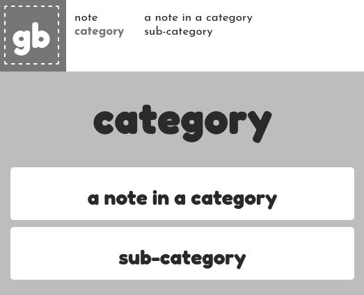
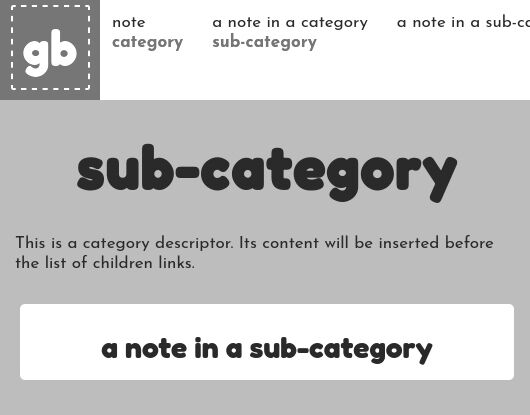

potoo
potoo is the program that generates this website. It is available on GitHub.
Input directory
input/
├── input.md
├── note.md
└── category/
├── a note in a category.md # regular Markdown note
├── image.jpg # media file
└── sub-category/
├── sub-category.md # category descriptor
└── a note in a sub-category.md
The website is generated from a set of files in a directory. potoo processes it by following these rules:
- Each Markdown file generates an HTML file, with a few special cases (see below).
- Each directory generates an HTML file.
- Every non-Markdown file is copied into a media sub-directory.
- Hidden files/directories (ie its name starts with ".") are skipped.
Markdown files
potoo supports the standard Markdown syntax, with a few additions:
- Obsidian's links (wikilinks)
- Obsidian's embeded elements
- Fenced code blocks
- Tables
Four optional meta-data fields can be placed at the beginning of the file: title, description, header, and header-caption.
title: My awesome note
description: A short phrase explaining what this is about
header: image.jpg
header-caption: Description of the image
## Actual Markdown content
...
Note that if no header field is present, the header-caption meta-data is ignored.
Categories
Notes can be placed in directories to create categories.
└── category/
├── a note in a category.md
└── sub-category/
└── a note in a sub-category.md
...

Each category will generate a corresponding HTML page with links to its content.
Special Markdown files
Category descriptors
If a Markdown file have the same name as its parent directory, it is considered a category descriptor. Its content is inserted at the top of the corresponding category page.
...
└── sub-category/
├── sub-category.md
...

Category descriptors may have an additional children meta-data field, which sets the order in which to display the children links.
The index file
input/
├── input.md
...
The category descriptor of the whole input directory will generate the index.html file (even if its name is not index.md).
This Markdown file is effectively a category descriptor, which means it also supports the children meta-data field for ordering elements.
The static directory
static/
│ ├── style/
│ ├── style.css
│ ├── Fredoka.ttf
│ └── Josefin.ttf
├── favicon.ico
...
Files that should be used as-is (CSS files, fonts, favicon...) can be placed inside the static directory.
Generated files
output/
├── index.html
├── favicon.ico
├── note.html
├── category.html
├── a_note_in_a_category.html
├── sub-category.html
├── a_note_in_a_sub-category.html
├── media/
│ └── image.jpg
└── style/
├── style.css
├── Fredoka.ttf
└── Josefin.ttf
The output directory contains the generated files. Its structure is as follows:
- Every HTML file is placed at the root
- Every non-HTML file is placed in a media sub-directory
- Everything that was stored in the static directory is copied at the root
Names of the generated files are "URLized" by replacing all non-alphanumeric character with an underscore.
This creates a limitation, as the program will return an error if two file names result in the same "URLized" name, even if the original files were placed in different directories.